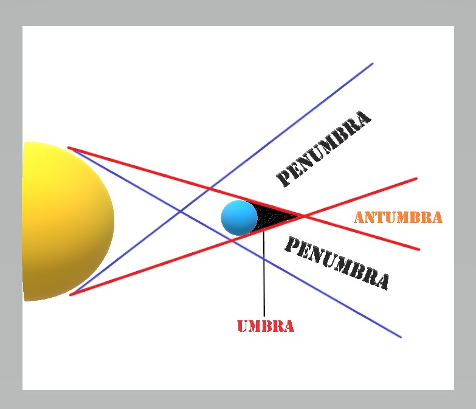

An Eclipse is an astronomical event that occurs when an celestial object get covered temporarily by another object'shadow. The alignment of three objects roughly in a straight line is called syzygy. It is a natural phenomena.This term is often used to describe Solar Eclipse and Lunar Eclipse.
What are they?


Umbra, Penumbra and Antumbra are three areas of shadow depending on the darkness created by an object infront of light source.
UMBRA :- It is the innermost part of the shadow. It is where the light source is completely blocked and a darkest part is created.
PENUMBRA :- It is the area where a portion of the light source is blocked/obscured.
ANTUMBRA :- It is the innermost area where the light source is blocked and created a dark shadow. But in this case the object cannot completely blocked the light source due its size and a round disk like ring can be seen just like in Annular Solar Eclipse. When the observer moves closer to the light source, the apparent size of the shadow increases to cause Umbra.
